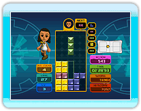
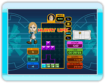
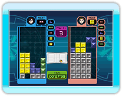

バランスWiiボードを使ってプレイします。バランスWiiボードでの操作はゲーム中の設定メニューの「ルールを見る」をご参照ください。
基本的なルールは「やさしいマラソン」と同じです。スコアやタイムの他に「アクションポイント」があり、これはプレイヤーの動作によってポイントアップします。
 バランスWiiボードを使ってプレイします。バランスWiiボードでの操作はゲーム中の設定メニューの「ルールを見る」をご参照ください。
基本的なルールは「やさしいマラソン」と同じですが、３分間プレイして、それまでのスコアとアクションポイントでハイスコアを目指します。
 バランスWiiボードを使ってプレイします。バランスWiiボードでの操作はゲーム中の設定メニューの「ルールを見る」をご参照ください。
基本的なルールは「コンピュータたいせん」と同じです。
なお、ホーム登録が終わっていない場合は､手順２の画面で以下の操作を行ってください。
※ 電池カバーを取り外す際は、バランスWiiボードを足の上に落としたり、指などを挟んだりしないよう、注意してください。
※ バランスWiiボードに乾電池が正しくセットされていることを確認してください。
※ 電源ランプが点滅したら、から指を離してください。
※ を10秒以上押さないでください。ホーム登録されているすべてのWiiリモコンの登録が消去されます。
※ Wii本体は、バランスWiiボードを1台だけホーム登録することができ、Wiiリモコンと合わせて10個まで登録できます。11個以上ホーム登録を行った場合、古いWiiリモコンのデータから順に消去されますが、バランスWiiボードのデータは消去されません。
※ バランスWiiボードをホーム登録できるWii本体は、1台のみです。ホーム登録済みのバランスWiiボードを他のWii本体にホーム登録した場合、バランスWiiボードの設定が上書きされるため、元のWii本体で使用する場合はもう一度ホーム登録する必要があります。
※ バランスWiiボードは4Pに接続されます。4PにWiiリモコンが接続されている場合は、Wiiリモコンの接続が解除されます。

 バランス
バランス Wii本体の
Wii本体の